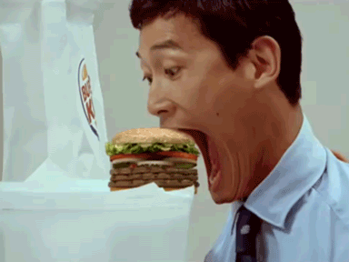
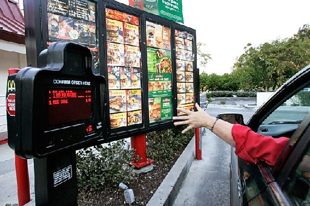

FAST FOODS
Os fast foods mais famosos e gostosos estão aqui!
confira:
Fast-food significa “comida rápida” em inglês. É um tipo de comida, geralmente lanches, para pessoas que não dispõem de muito tempo para fazer as suas refeições, e optam por alimentos fast-food, pois são preparados e servidos rapidamente.
Os fast-foods de rua são chamados de food-truck ou fast-truck (“caminhão de comida”, na tradução livre para o português).

E o que é JunkyFood?
é mais uma daquelas expressões inglesas que ficaram conhecidas no nosso país mesmo por quem não fala inglês. Assim como "fast food", "fashion" e diversas outras.
Alguns sugerem "comida lixo" como tradução literal para o português. Na prática, podemos traduzir como "porcaria", "besteira", usado pejorativamente em relação a alimentos de alto teor calórico, mas com poucos nutrientes.
<------ (não siga esse exemplo)
E o que é DRIVE-THRU?

O drive thru foi inventado em 1931 pelo norte-americano Royce Hailey, quando o seu chefe disse que “as pessoas com carro são tão preguiçosas que não querem sair de dentro dele nem para comer”.
Uma frase crucial para despertar a ideia em Hailey de possibilitar aos clientes da lanchonete onde trabalhava, comprar os alimentos sem terem que sair do automóvel. Uma invenção que fez bastante sucesso e foi adotada por grandes redes de lanchonetes em todo o mundo. A McDonald´s escolheu um outro nome para o mesmo serviço: McDrive.